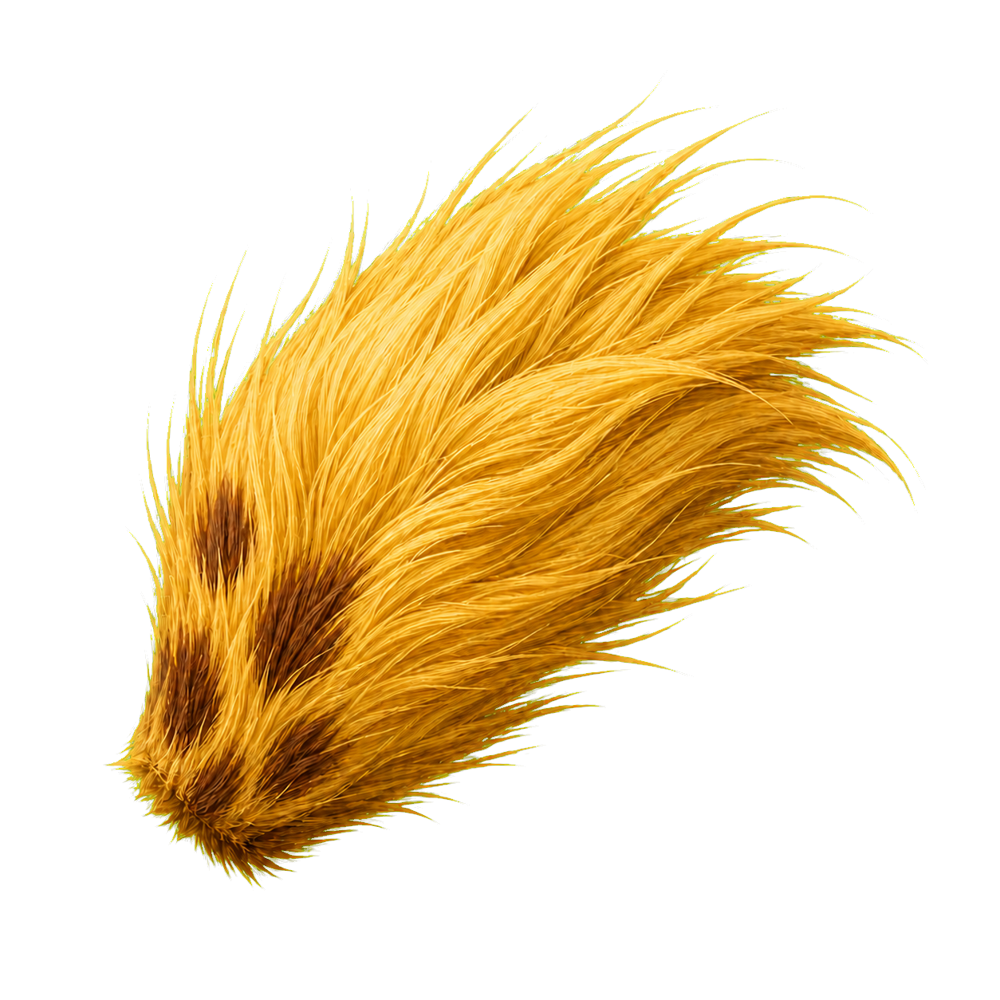
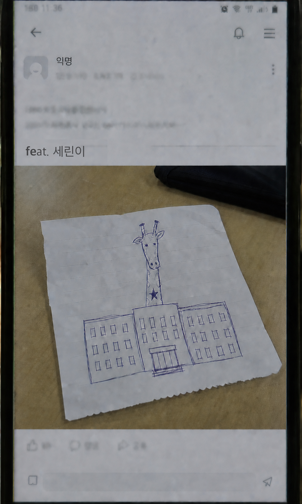
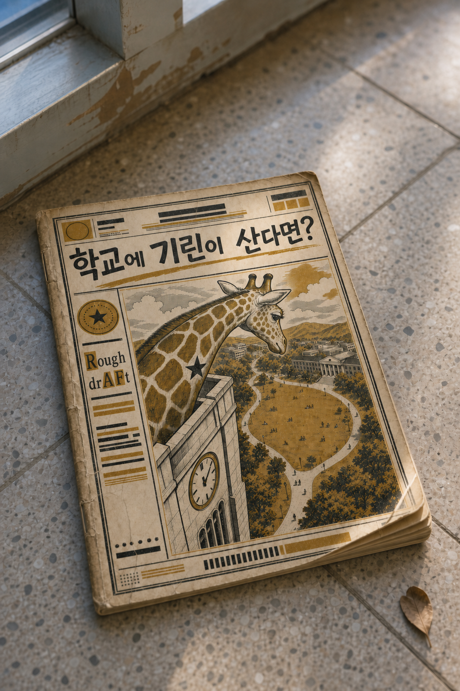
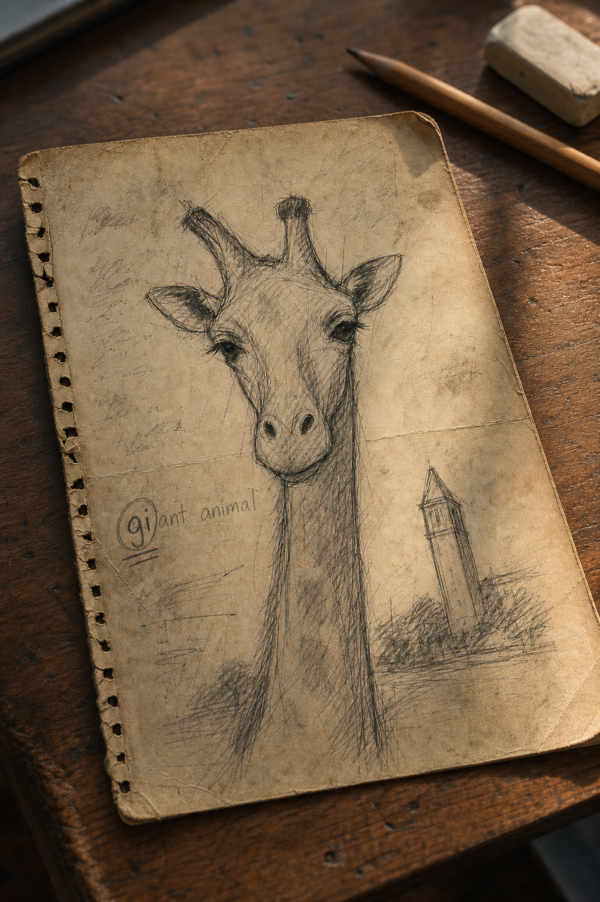

Campus Drop은 교내 QR 포스터에서 시작되는 현장 조사형 웹 게임입니다.
CD-SJ-01
시계탑 꼭대기에서 무언가 목격됐다
최근 목격 신고
7건
아직 확인된 사진은 없습니다.
학생회관 포스터를 통해 접속했습니다. 창문 뒤로 긴 그림자를 봤다는 제보가 남아 있습니다.
지정된 잔디밭에서 카메라 조사를 시작하고, 반경 20m 안에서 첫 번째 흔적을 감지합니다.
이야기의 단서가 중요합니다. 큰 소리나 스포일러 없이 천천히 진행해 주세요.
※ 이동 중에는 주변을 확인하고 안전한 위치에서 화면을 조작하세요.
카카오 로그인 완료
임시 현장 조사원 등록
신고 01긴 목 그림자
신고 02높은 잎사귀
신고 03노란 무늬
신고 04발굽 소리
CAMPUS DROP 운영본부
시계탑 대형 생물 목격 사건
세종대학교에는 오래된 소문이 하나 있습니다. “시계탑 꼭대기에는 기린이 산다.” 본부는 최근 목격 신고 7건을 바탕으로 별도 현장 조사를 시작합니다.
사건 개요
CD-SJ-01 현장 조사 개방
농동로 209 인근 잔디밭으로 이동해 기린의 노란털 흔적을 확인하세요. GPS는 반경 20m 진입 여부만 확인합니다.조사 지점농동로 209 잔디밭
Kakao 키 없이 실제 지도 미리보기 표시 중
예상 거리위치 확인 필요
조사 가능 범위20m
내 위치 갱신대기 중
위치 확인 전
AR 현장 조사
잔디밭을 천천히 훑어보세요
카메라 권한을 요청하는 중...조사 반경측정 중
첫 번째 흔적 발견
노란색 털을 발견했다!
카메라 조사 중 잔디밭 하단 신호가 반응했습니다. 확보한 표본을 운영본부로 전송합니다.
현장 표본 A기린의 노란털
잔디밭 가장자리에서 확보한 노란 털 표본입니다. 운영본부 분석 서버로 원본 데이터를 전송합니다.
Sample Upload
표본을 운영본부로 전송 중
노란 털 표본 이미지와 위치 기록을 묶어 보안 전송합니다.
01표본 이미지 압축대기
02위치 기록 첨부대기
03CAMPUS DROP 운영본부 전송대기
0%
2장
여러 사람이 그린 하나의 기린
DROP LINK가 표시한 강한 에너지 반응 지점으로 이동해 손상된 과거 기록을 확보하세요.Kakao 키 없이 실제 지도 미리보기 표시 중
조사 범위10m
확보한 자료0/3
배열 상태0/3
에너지 반응이 강한 지점 3곳을 방문해 자료 이미지를 확보하세요.

도착 전 접근 잠김
도착 전 접근 잠김
도착 전 접근 잠김CAMPUSDROP 기록 분석 지시획득한 세 건의 기록을 분석하십시오.
기록의 형태와 내용을 확인하고, 오래된 기록부터 순서대로 배치하십시오. 드래그하거나 카드 두 장을 차례로 눌러 위치를 교환할 수 있습니다.
기록을 오래된 순서대로 배치한 뒤 분석을 요청하세요.
CAMPUSDROP 분석 보고 요청세 기록에 공통으로 등장하는 생물을 확인하십시오.
확인한 생물의 명칭을 영문으로 보고하십시오.
기록 배열이 확인되면 보고 입력창이 열립니다.
운영본부 분석 대기
세 지점의 자료 이미지를 모두 확보하세요.
각 에너지 지점 반경 10m 안에 들어가야 자료 이미지가 열립니다.